library(feedr)
library(patchwork)
library(tidyverse)
d <- read_csv("Data/Datasets/logger_raw.csv")
m <- read_csv("Data/Datasets/meta_raw.csv")
source("00_functions.R") # Functions for plotting the dataCleaning
In this file we’ll go through the metadata and logger data and look for discrepancies. We’ll end with a list of loggers/animals to omit from the analysis, as well as a list of things to check and correct if possible.
Let’s get started by loading the packages and data.
Clean up
Now that we have the data loaded and formatted, let’s clean it up.
First let’s check that the pit tags are as they should be.
The check_ids function expects a data frame with animal_id and with species (for reasons). Let’s use our meta data and just rename the nest_box column to species.
chk <- rename(m, "species" = "nest_box")
d_clean <- check_ids(d, ids = chk, omit = c("TEST1", "TEST2", "TEST3", "TEST4"))Some animal_ids present in your data do not exist in the animal_id index: 01103F5E98, 01103F5509, 011016B674, 011016BB3E, 011016C8A7, 0700EDE59F, 0110273064, 01103F6CE7Some animal_ids present in your animal_id index, are not in your data: 01103F7F4C, 0700EE2AF9, 01103F623E, 011016V674, 011061C8A7, 011016D4EC, 011016BFF2, 01103F7964, 01103F6479, 0700EDB80A, 01103FC6E7The following animal_ids have been omitted: 01103F8FC7, 0700EE430E, 0700ED9EC0, 01103F3B07Good, the omitted ids are for the Test wands.
And, some of the ids missing from the meta data are the ones recorded in the alternate reported pit # column.
- “011016C8A7” (in data) “011061C8A7” (error in metadata, not in data)
- “011016B674” (in data) “011016V674” (error in metadata, not in data)
Let’s fix those right away.
m_clean <- mutate(m,
animal_id = if_else(animal_id == "011061C8A7", "011016C8A7", animal_id),
animal_id = if_else(animal_id == "011016V674", "011016B674", animal_id)) |>
filter(!str_detect(nest_box, "TEST")) # We'll omit the test tags while we're at it
chk <- rename(m, "species" = "nest_box")
d_clean <- check_ids(d, ids = chk, omit = c("TEST1", "TEST2", "TEST3", "TEST4"))Some animal_ids present in your data do not exist in the animal_id index: 01103F5E98, 01103F5509, 011016B674, 011016BB3E, 011016C8A7, 0700EDE59F, 0110273064, 01103F6CE7Some animal_ids present in your animal_id index, are not in your data: 01103F7F4C, 0700EE2AF9, 01103F623E, 011016V674, 011061C8A7, 011016D4EC, 011016BFF2, 01103F7964, 01103F6479, 0700EDB80A, 01103FC6E7The following animal_ids have been omitted: 01103F8FC7, 0700EE430E, 0700ED9EC0, 01103F3B07Better, but we still have some questions:
These ids are in the logger data, but there is no record of them in the metadata 01103F5E98, 01103F5509, 011016BB3E, 0700EDE59F, 0110273064, 01103F6CE7
These ids are in the meta data, but there is no record of them in the logger data 01103F7F4C, 0700EE2AF9, 01103F623E, 011016D4EC, 011016BFF2, 01103F7964, 01103F6479, 0700EDB80A, 01103FC6E7
Explore logger data
These are the records of birds in the logger data, but not in the metadata.
filter(d_clean, animal_id %in% c("01103F5E98", "01103F5509", "011016BB3E",
"0700EDE59F", "0110273064", "01103F6CE7")) |>
group_by(animal_id, logger_id) |>
summarize(n = n(), date_min = min(date), date_max = max(date)) |>
arrange(desc(n))`summarise()` has grouped output by 'animal_id'. You can override using the `.groups` argument.# A tibble: 6 × 5
# Groups: animal_id [6]
animal_id logger_id n date_min date_max
<chr> <chr> <int> <date> <date>
1 01103F6CE7 UR47 677 2023-05-22 2023-05-25
2 011016BB3E KC58 418 2023-05-27 2023-05-30
3 01103F5E98 KC21 87 2023-05-26 2023-05-27
4 0700EDE59F UR37 8 2023-05-30 2023-06-01
5 0110273064 UR37 1 2023-05-31 2023-05-31
6 01103F5509 KC41 1 2023-06-03 2023-06-03We can probably ignore the ones with <10 hits (0700EDE59F, 0110273064, 01103F5509), but what about the other three, with so many hits (01103F6CE7, 011016BB3E, 01103F5E98)?
We’ll check them all, just in case.
Plot out the data ranges
In this plot we’re looking at the start/end points for the feeder loggers (in black) according to the logger data.
On top in colours, we have the start/end times of the birds based on the RFID start/end times from the meta data. These are lined up with the nest box from the meta data as well.
plot_by(d_clean, by = "logger") +
geom_errorbarh(data = m_clean, aes(xmin = rfid_time_start, xmax = rfid_time_end, y = nest_box, colour = animal_id),
linewidth = 2, alpha = 0.3)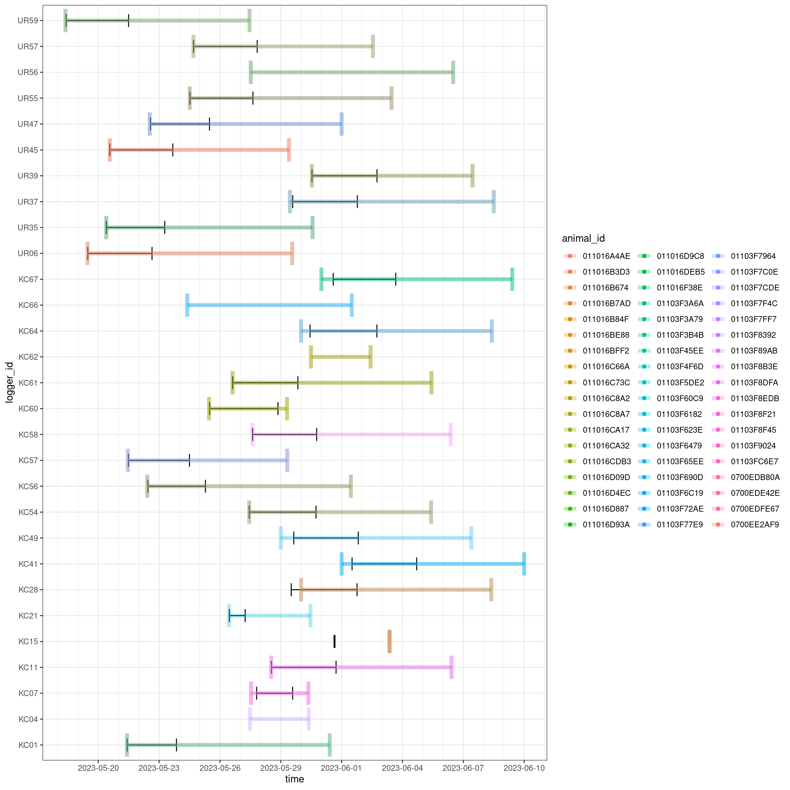
In places there are birds without a logger recording (e.g., UR56, KC66, KC04)
We’ll use this as a starting point to explore why some birds are in the logger files but not the metadata and vice versa.
Remaining problems to check
Ids that are in the meta data but not in the logger data.
m_sub <- m |>
filter(animal_id %in% c("01103F7964", "01103FC6E7", "0700EDB80A", "01103F623E",
"01103F7F4C", "01103F6479", "011016D4EC", "011016BFF2", "0700EE2AF9")) |>
arrange(nest_box, sex)
m_sub# A tibble: 9 × 10
nest_box animal_id sex egg_date hatch_date fledge_date rfid_time_start rfid_time_end
<chr> <chr> <chr> <date> <date> <date> <dttm> <dttm>
1 KC04 01103F7F… F 2023-05-08 2023-05-25 NA 2023-05-27 11:27:00 2023-05-30 09:10:00
2 KC15 0700EE2A… M 2023-05-10 2023-05-29 NA 2023-06-03 08:39:00 2023-06-03 08:39:00
3 KC21 01103F62… M 2023-05-06 2023-05-25 NA 2023-05-26 10:47:00 2023-05-30 11:06:00
4 KC62 011016D4… F 2023-05-10 2023-05-28 NA 2023-05-30 11:40:00 2023-06-02 10:12:00
5 KC62 011016BF… M 2023-05-10 2023-05-28 NA 2023-05-30 11:40:00 2023-06-02 10:12:00
6 KC66 01103F79… F 2023-05-04 2023-05-21 2023-06-11 2023-05-24 09:15:00 2023-06-01 11:59:00
7 KC66 01103F64… M 2023-05-04 2023-05-21 2023-06-11 2023-05-24 09:15:00 2023-06-01 11:59:00
8 UR45 0700EDB8… M 2023-04-29 2023-05-18 2023-06-09 2023-05-20 13:36:00 2023-05-29 09:40:00
9 UR47 01103FC6… M 2023-05-01 2023-05-21 2023-06-10 2023-05-22 12:55:00 2023-06-01 00:00:00
# ℹ 2 more variables: band_date <date>, animal_id2 <chr>Ids that are in the logger data but not in the meta data
d_sub <- filter(d_clean, animal_id %in% c("01103F5E98", "01103F5509", "011016BB3E", "0700EDE59F", "0110273064", "01103F6CE7")) |>
group_by(animal_id, logger_id) |>
summarize(n = n(), date_min = min(date), date_max = max(date)) |>
arrange(desc(n))`summarise()` has grouped output by 'animal_id'. You can override using the `.groups` argument.d_sub# A tibble: 6 × 5
# Groups: animal_id [6]
animal_id logger_id n date_min date_max
<chr> <chr> <int> <date> <date>
1 01103F6CE7 UR47 677 2023-05-22 2023-05-25
2 011016BB3E KC58 418 2023-05-27 2023-05-30
3 01103F5E98 KC21 87 2023-05-26 2023-05-27
4 0700EDE59F UR37 8 2023-05-30 2023-06-01
5 0110273064 UR37 1 2023-05-31 2023-05-31
6 01103F5509 KC41 1 2023-06-03 2023-06-03Let’s visualize this to make it easier on ourselves
plot_by(d, by = "logger", id = d_sub$animal_id) +
geom_errorbarh(data = m_sub, aes(xmin = rfid_time_start, xmax = rfid_time_end, y = nest_box, colour = animal_id),
linewidth = 2, alpha = 0.5) +
labs(title = "Mismatch between loggers and metadata",
subtitle = "Colourful points are IDs in logger data not in metadata\nColourful lines are IDs in metadata not in logger data")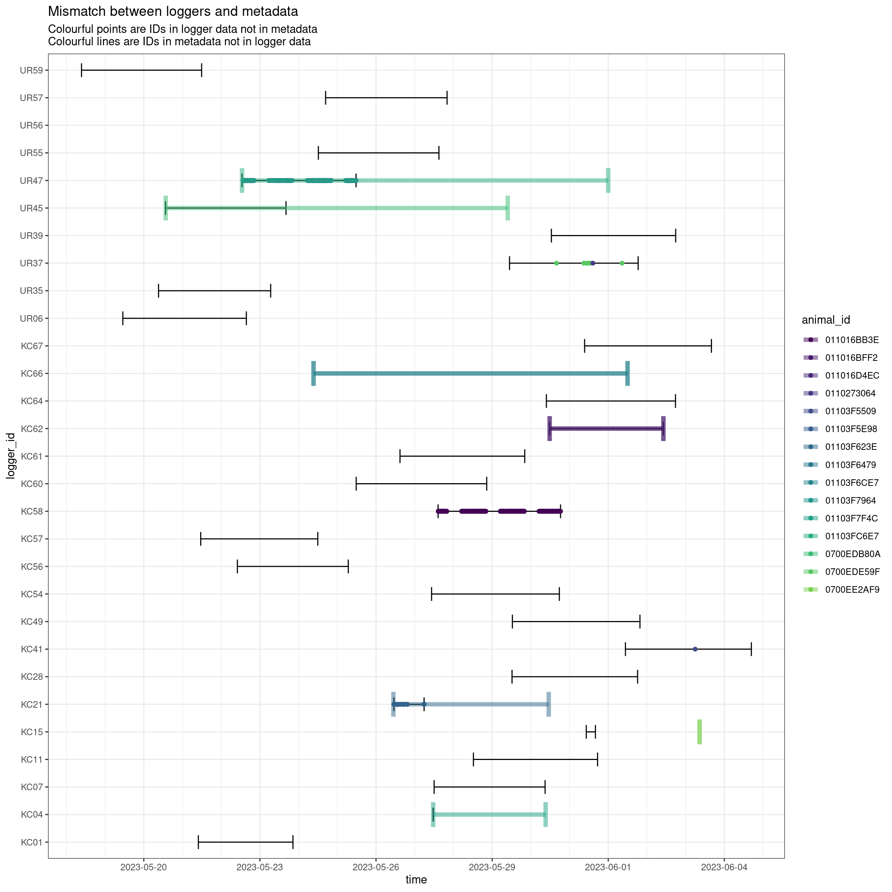
Let’s see if we can clear these problems up.
Starting from the top!
UR56
UR56 has problems with missing data in the logger files…
filter(m, nest_box == "UR56")# A tibble: 2 × 10
nest_box animal_id sex egg_date hatch_date fledge_date rfid_time_start rfid_time_end
<chr> <chr> <chr> <date> <date> <date> <dttm> <dttm>
1 UR56 011016A4… M 2023-05-04 2023-05-21 2023-06-11 2023-05-27 12:27:00 2023-06-06 12:00:00
2 UR56 01103F3A… F 2023-05-04 2023-05-21 2023-06-11 2023-05-27 12:27:00 2023-06-06 12:00:00
# ℹ 2 more variables: band_date <date>, animal_id2 <chr>filter(d, logger_id == "UR56") |>
group_by(animal_id) |>
summarize(min = min(time), max = max(time), n = n())# A tibble: 3 × 4
animal_id min max n
<chr> <dttm> <dttm> <int>
1 011016A4AE NA NA 199
2 01103F3A6A NA NA 460
3 01103F8FC7 NA NA 2UR47 and 01103F6CE7
01103F6CE7 is in the logger data but not in the metadata.
It looks like that bird was tagged at the same time as the next box was set up with a logger.
Let’s see what other birds used that box…
plot_by(d_clean, id = "UR47", by = "animal")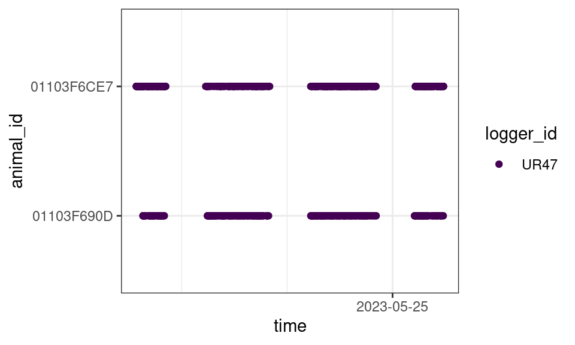
Well, there are only two birds using that box.
And only one of them is in the metadata, but we do have another, 01103FC6E7
filter(m_clean, nest_box == "UR47")# A tibble: 2 × 10
nest_box animal_id sex egg_date hatch_date fledge_date rfid_time_start rfid_time_end
<chr> <chr> <chr> <date> <date> <date> <dttm> <dttm>
1 UR47 01103FC6… M 2023-05-01 2023-05-21 2023-06-10 2023-05-22 12:55:00 2023-06-01 00:00:00
2 UR47 01103F69… F 2023-05-01 2023-05-21 2023-06-10 2023-05-22 12:55:00 2023-06-01 00:00:00
# ℹ 2 more variables: band_date <date>, animal_id2 <chr>So we have
- “01103FC6E7” in the data, but not in the metadata
- “01103F6CE7” in the metadata, but not in the data
So we have another typo: 01103FC6E7 in the meta, should actually be 01103F6CE7
m_clean <- mutate(m_clean,
animal_id = if_else(animal_id == "01103FC6E7", "01103F6CE7", animal_id))UR45 and 0700EDB80A
0700EDB80A is in the metadata but not in the logger data.
It looks like that bird was tagged at the same time as the next box was set up with a logger.
Let’s see what other birds used that box…
filter(m, nest_box == "UR45")# A tibble: 2 × 10
nest_box animal_id sex egg_date hatch_date fledge_date rfid_time_start rfid_time_end
<chr> <chr> <chr> <date> <date> <date> <dttm> <dttm>
1 UR45 011016BE… F 2023-04-29 2023-05-18 2023-06-09 2023-05-20 13:36:00 2023-05-29 09:40:00
2 UR45 0700EDB8… M 2023-04-29 2023-05-18 2023-06-09 2023-05-20 13:36:00 2023-05-29 09:40:00
# ℹ 2 more variables: band_date <date>, animal_id2 <chr>plot_by(d_clean, id = "UR45", by = "animal")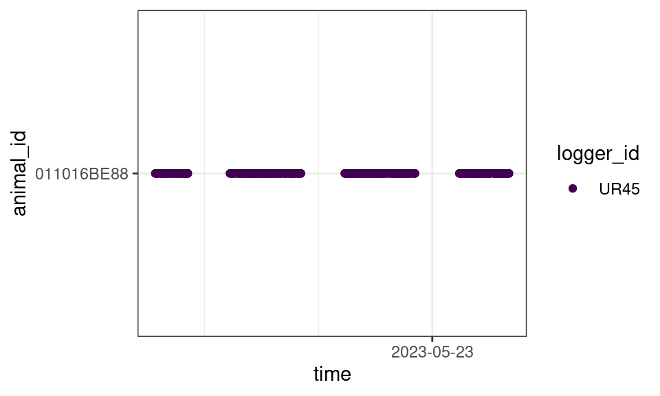
Hmm, there is only one bird using that box… perhaps our bird’s RFID tag malfunctioned?
Check - did 0700EDB80A stay at that nestbox?
UR37 and 0700EDE59F & 0110273064
These two ids were not recorded in the metadata and had very few visits to UR37 (and only UR37)
plot_by(d_clean, id = "UR37", by = "animal")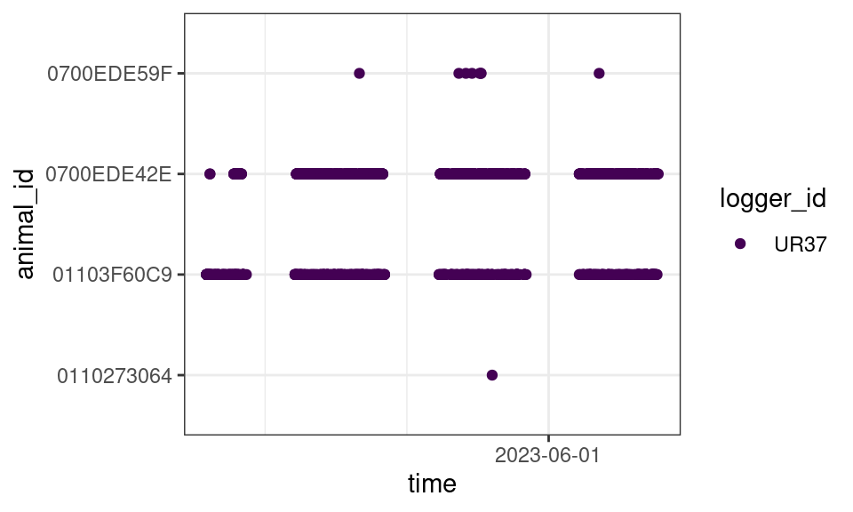
plot_by(d_clean, id = "0700EDE59F", by = "logger") +
plot_by(d_clean, id = "0110273064", by = "logger")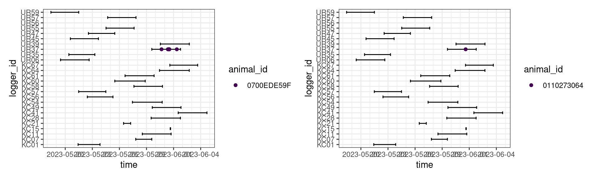
Let’s omit them
d_clean <- filter(d_clean, !animal_id %in% c("0700EDE59F", "0110273064"))We’ll assume they’re left over from some other study? Or other TESTS?
KC66 and 01103F6479 & 01103F7964
01103F6479 & 01103F7964 are in the meta data but not in the logger data.
We have them in the metadata
filter(m, nest_box == "KC66")# A tibble: 2 × 10
nest_box animal_id sex egg_date hatch_date fledge_date rfid_time_start rfid_time_end
<chr> <chr> <chr> <date> <date> <date> <dttm> <dttm>
1 KC66 01103F79… F 2023-05-04 2023-05-21 2023-06-11 2023-05-24 09:15:00 2023-06-01 11:59:00
2 KC66 01103F64… M 2023-05-04 2023-05-21 2023-06-11 2023-05-24 09:15:00 2023-06-01 11:59:00
# ℹ 2 more variables: band_date <date>, animal_id2 <chr>But not in the logger data
filter(d_clean, logger_id == "KC66")# A tibble: 0 × 5
# ℹ 5 variables: animal_id <chr>, date <date>, time <dttm>, logger_id <chr>, time_orig <chr>There are no logger files for KC66, so perhaps not surprising that we don’t have any hits for these two birds.
Check - Are these files truly missing? Or just didn’t get added?
KC62 and 001016BFF2 & 011016D4EC
001016BFF2 & 011016D4EC are in the metdata but not in the logger data.
We have them in the metadata
filter(m, nest_box == "KC62")# A tibble: 2 × 10
nest_box animal_id sex egg_date hatch_date fledge_date rfid_time_start rfid_time_end
<chr> <chr> <chr> <date> <date> <date> <dttm> <dttm>
1 KC62 011016D4… F 2023-05-10 2023-05-28 NA 2023-05-30 11:40:00 2023-06-02 10:12:00
2 KC62 011016BF… M 2023-05-10 2023-05-28 NA 2023-05-30 11:40:00 2023-06-02 10:12:00
# ℹ 2 more variables: band_date <date>, animal_id2 <chr>But no hits for this nest box in the logger data
filter(d_clean, logger_id == "KC62")# A tibble: 0 × 5
# ℹ 5 variables: animal_id <chr>, date <date>, time <dttm>, logger_id <chr>, time_orig <chr>There is a logger file for KC62, but it only has test hits (check the non-cleaned data with test reads).
filter(d, logger_id == "KC62")# A tibble: 2 × 5
animal_id date time logger_id time_orig
<chr> <date> <dttm> <chr> <chr>
1 01103F8FC7 2023-05-30 2023-05-30 11:38:50 KC62 05/30/2023 11:38:50
2 01103F8FC7 2023-06-02 2023-06-02 10:10:08 KC62 06/02/2023 10:10:08And the meta data shows that the fledge failed, so perhaps the parents weren’t using the box at this time.
Check - Do we know when the nest failed? Do we know if the parents weren’t using the box?
KC58 and 011016BB3E
011016BB3E is in the logger data but not in the metadata.
We only have one record of a bird at this nest box in the metadata
filter(m, nest_box == "KC58")# A tibble: 1 × 10
nest_box animal_id sex egg_date hatch_date fledge_date rfid_time_start rfid_time_end
<chr> <chr> <chr> <date> <date> <date> <dttm> <dttm>
1 KC58 01103F8B… F 2023-05-08 2023-05-26 2023-06-16 2023-05-27 14:30:00 2023-06-06 09:00:00
# ℹ 2 more variables: band_date <date>, animal_id2 <chr>But we clearly have evidence of two birds visiting this box.
plot_by(d_clean, id = "KC58", by = "animal")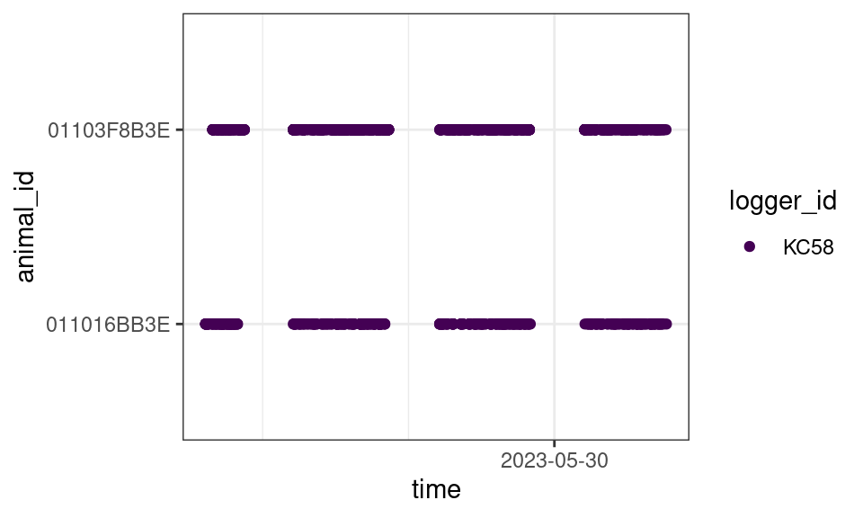
filter(d_clean, animal_id == "011016BB3E") |>
group_by(logger_id) |>
summarize(min = min(date), max = max(date), n = n())# A tibble: 1 × 4
logger_id min max n
<chr> <date> <date> <int>
1 KC58 2023-05-27 2023-05-30 418Check - Is 011016BB3E the male at this box and missing from the metadata?
KC41
01103F5509 is not in the metadata and has a single hit on logger KC41 (and only logger KC41)
plot_by(d_clean, id = "01103F5509", by = "logger")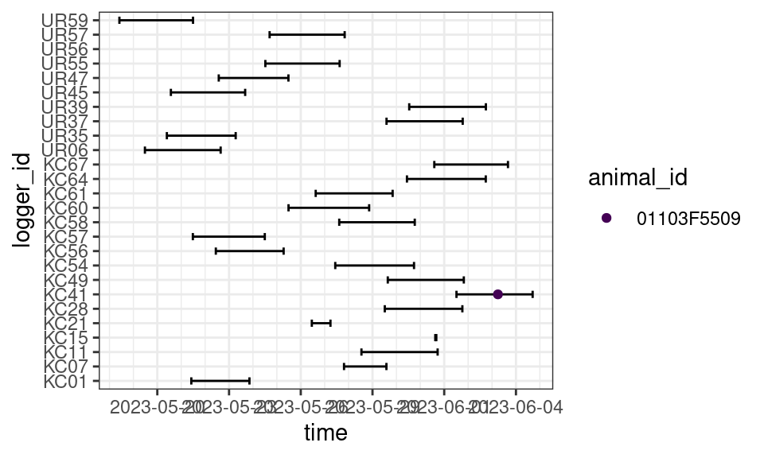
plot_by(d_clean, id = "KC41", by = "animal")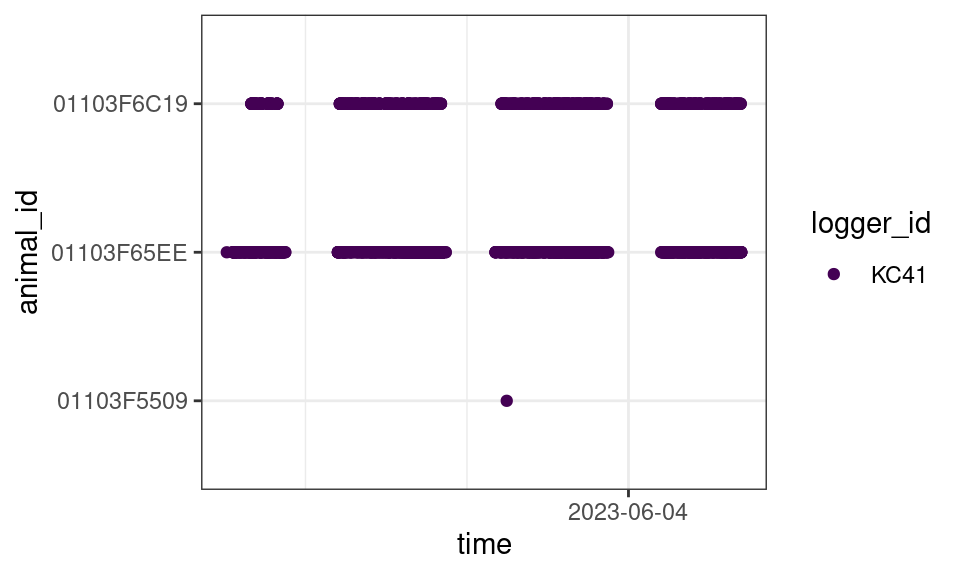
KC41 has two other well established birds, though, so we’ll assume that 01103F5509 is an individual tagged elsewhere and was just checking things out.
d_clean <- filter(d_clean, animal_id != "01103F5509")KC21 and 01103F5E98
01103F5E98 is in the logger data but not in the metadata.
We only have one record of a bird at this nest box in the metadata
filter(m, nest_box == "KC21")# A tibble: 1 × 10
nest_box animal_id sex egg_date hatch_date fledge_date rfid_time_start rfid_time_end
<chr> <chr> <chr> <date> <date> <date> <dttm> <dttm>
1 KC21 01103F62… M 2023-05-06 2023-05-25 NA 2023-05-26 10:47:00 2023-05-30 11:06:00
# ℹ 2 more variables: band_date <date>, animal_id2 <chr>And we only have evidence of one bird (but a different one) visiting this box.
plot_by(d_clean, id = "KC21", by = "animal")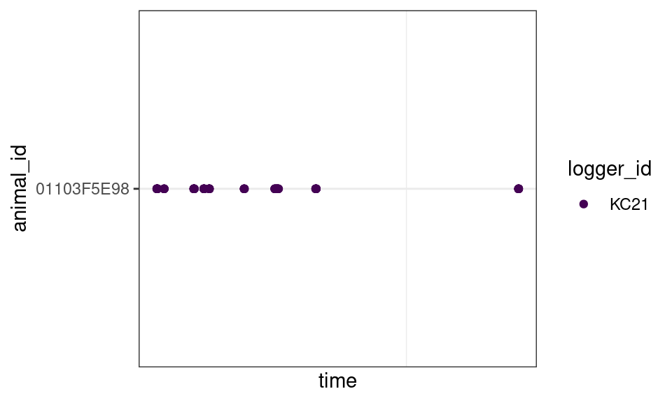
filter(d_clean, animal_id == "01103F5E98") |>
group_by(logger_id) |>
summarize(min = min(date), max = max(date), n = n())# A tibble: 1 × 4
logger_id min max n
<chr> <date> <date> <int>
1 KC21 2023-05-26 2023-05-27 87But this bird in the metadata didn’t have fledglings and there aren’t many visits to the logger by the other bird.
Check - Do we know when the nest failed? Is it possible the parents weren’t using the box?
Is 01103F5E98 missing from the metadata?
KC15 and 0700EE2AF9
0700EE2AF9 is in the metadata but not in the logger data.
We have two records of birds at this nest box in the metadata.
filter(m, nest_box == "KC15")# A tibble: 2 × 10
nest_box animal_id sex egg_date hatch_date fledge_date rfid_time_start rfid_time_end
<chr> <chr> <chr> <date> <date> <date> <dttm> <dttm>
1 KC15 011016D0… F 2023-05-10 2023-05-29 NA 2023-06-03 08:39:00 2023-06-03 08:39:00
2 KC15 0700EE2A… M 2023-05-10 2023-05-29 NA 2023-06-03 08:39:00 2023-06-03 08:39:00
# ℹ 2 more variables: band_date <date>, animal_id2 <chr>And both records show the same start/end date for their RFID tags…
plot_by(d_clean, id = "KC15", by = "animal")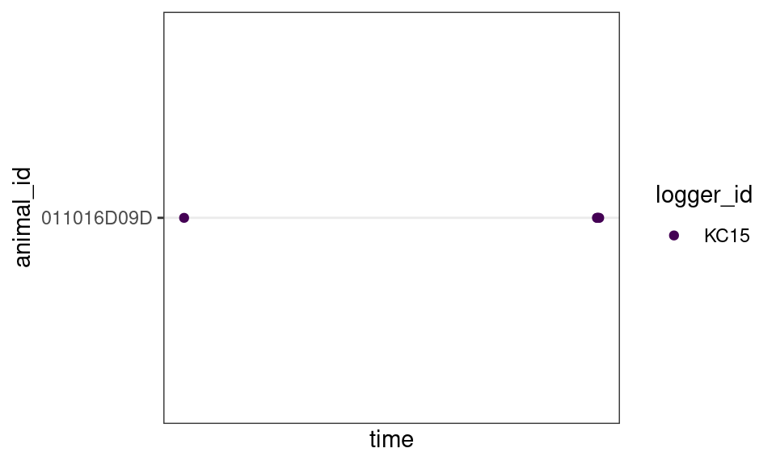
filter(d_clean, logger_id == "KC15")# A tibble: 5 × 5
animal_id date time logger_id time_orig
<chr> <date> <dttm> <chr> <chr>
1 011016D09D 2023-05-31 2023-05-31 15:01:23 KC15 05/31/2023 15:01:23
2 011016D09D 2023-05-31 2023-05-31 16:02:56 KC15 05/31/2023 16:02:56
3 011016D09D 2023-05-31 2023-05-31 16:03:00 KC15 05/31/2023 16:03:00
4 011016D09D 2023-05-31 2023-05-31 16:03:08 KC15 05/31/2023 16:03:08
5 011016D09D 2023-05-31 2023-05-31 16:03:16 KC15 05/31/2023 16:03:16We only have a couple reads on this logger (and it’s from one bird, earlier than the metadata says it got an RFID tag).
This nest also failed to fledge.
Check - Do we know when the nest failed? Is it possible the parents weren’t using the box?
Check - Are the RFID start dates in the meta data correct for these two birds?
KC04 and 01103F7F4C
01103F7F4C is in the metadata but not in the logger data.
We only have one record of a bird at this nest box in the metadata.
filter(m, nest_box == "KC04")# A tibble: 1 × 10
nest_box animal_id sex egg_date hatch_date fledge_date rfid_time_start rfid_time_end
<chr> <chr> <chr> <date> <date> <date> <dttm> <dttm>
1 KC04 01103F7F… F 2023-05-08 2023-05-25 NA 2023-05-27 11:27:00 2023-05-30 09:10:00
# ℹ 2 more variables: band_date <date>, animal_id2 <chr>And no records of usage of the next box in the logger data
plot_by(d_clean, id = "KC04", by = "animal")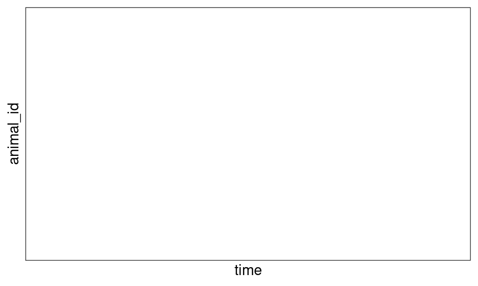
filter(d_clean, logger_id == "KC04")# A tibble: 0 × 5
# ℹ 5 variables: animal_id <chr>, date <date>, time <dttm>, logger_id <chr>, time_orig <chr>But there was a test record
filter(d, logger_id == "KC04")# A tibble: 1 × 5
animal_id date time logger_id time_orig
<chr> <date> <dttm> <chr> <chr>
1 0700EE430E 2023-05-27 2023-05-27 11:26:53 KC04 05/27/2023 11:26:53This nest also failed to fledge.
Check - Do we know when the nest failed? Is it possible the parents weren’t using the box?
Check for mates
All nest boxes should have two parents
count(m_clean, nest_box) |>
filter(n != 2)# A tibble: 4 × 2
nest_box n
<chr> <int>
1 KC04 1
2 KC21 1
3 KC49 1
4 KC58 1KC04, KC21, KC58 have been dealt with, what about KC49?
filter(m_clean, nest_box == "KC49")# A tibble: 1 × 10
nest_box animal_id sex egg_date hatch_date fledge_date rfid_time_start rfid_time_end
<chr> <chr> <chr> <date> <date> <date> <dttm> <dttm>
1 KC49 01103F72… F 2023-05-09 2023-05-27 2023-06-15 2023-05-29 00:00:00 2023-06-07 09:26:00
# ℹ 2 more variables: band_date <date>, animal_id2 <chr>plot_by(d_clean, id = "KC49", by = "animal")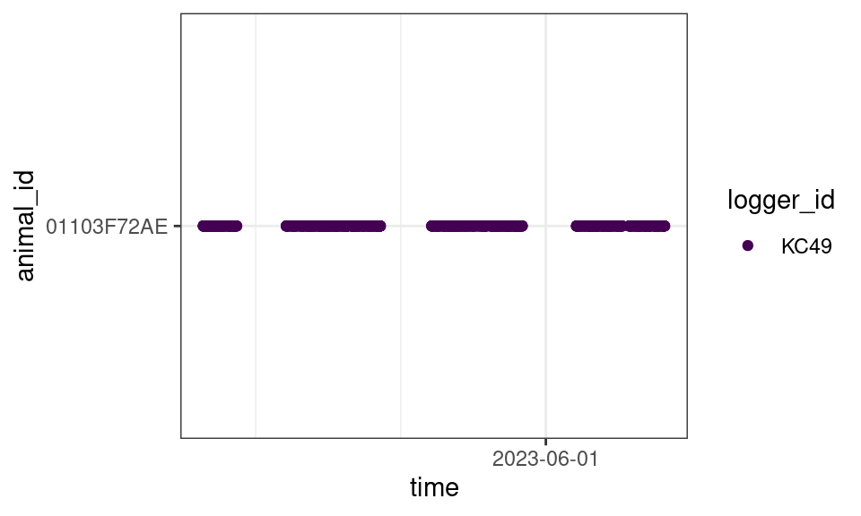
Only one individual… presumably only one was tagged.
Finalizing
To keep things clean, we will remove birds with problems for whom the nest failed.
We’ll also omit UR56 as we have no correct times for that logger
omit <- c("KC62", "KC21", "KC15", "KC04", "UR56")
m_clean <- mutate(m_clean, omit = nest_box %in% omit)
d_clean <- filter(d_clean, !logger_id %in% omit)
write_csv(d_clean, "Data/Datasets/logger_clean.csv")
write_csv(m_clean, "Data/Datasets/meta_clean.csv")To check
- Check the birds who’s nests failed… should we be omitting all of them?
- Check bird 0700EDB80A. Did they disappear from their site? Or did their RFID tag malfunction
- Check for missing KC66 logger files, did the logger fail? Or are the files just somewhere else?
- Check/add 011016BB3E to the metadata (from nest box KC58)
- Check/add 01103F5E98 to the metadata (from nest box KC21) [but only a few visits…]
- Check the start dates for the RFID tags in the metadata for 011016D09D and 0700EE2AF9, do they need to be corrected? (For nest box KC15)
Reproducibility
Packages
You probably only need to cite feedr and possibly the tidyverse, but you should keep track of the packages used and their versions (under General Info).
tidyverse
Wickham H, Averick M, Bryan J, Chang W, McGowan LD, François R, Grolemund G, Hayes A, Henry L, Hester J, Kuhn M, Pedersen TL, Miller E, Bache SM, Müller K, Ooms J, Robinson D, Seidel DP, Spinu V, Takahashi K, Vaughan D, Wilke C, Woo K, Yutani H (2019). “Welcome to the tidyverse.” Journal of Open Source Software, 4(43), 1686. doi:10.21105/joss.01686 https://doi.org/10.21105/joss.01686.
feedr
LaZerte SE, Reudink MW, Otter KA, Kusack J, Bailey JM, Woolverton A, Paetkau M, de Jong A, Hill DJ (2017). “feedr and animalnexus.ca: A paired R package and user-friendly Web application for transforming and visualizing animal movement data from static stations.” Ecology and Evolution, 7(19), 7884-7896. doi:10.1002/ece3.3240 https://doi.org/10.1002/ece3.3240.
General info
devtools::session_info()─ Session info ───────────────────────────────────────────────────────────────────────────────────
setting value
version R version 4.3.2 (2023-10-31)
os Ubuntu 22.04.3 LTS
system x86_64, linux-gnu
ui X11
language en_CA:en
collate en_CA.UTF-8
ctype en_CA.UTF-8
tz America/Winnipeg
date 2023-11-14
pandoc 3.1.1 @ /usr/lib/rstudio/resources/app/bin/quarto/bin/tools/ (via rmarkdown)
─ Packages ───────────────────────────────────────────────────────────────────────────────────────
package * version date (UTC) lib source
bit 4.0.5 2022-11-15 [1] CRAN (R 4.3.0)
bit64 4.0.5 2020-08-30 [1] CRAN (R 4.3.0)
cachem 1.0.8 2023-05-01 [1] CRAN (R 4.3.0)
callr 3.7.3 2022-11-02 [1] CRAN (R 4.3.0)
cli 3.6.1 2023-03-23 [1] CRAN (R 4.3.0)
colorspace 2.1-0 2023-01-23 [1] CRAN (R 4.3.0)
crayon 1.5.2 2022-09-29 [1] CRAN (R 4.3.0)
crosstalk 1.2.0 2021-11-04 [1] CRAN (R 4.3.0)
devtools 2.4.5 2022-10-11 [1] CRAN (R 4.3.0)
digest 0.6.33 2023-07-07 [1] CRAN (R 4.3.1)
dplyr * 1.1.3 2023-09-03 [1] CRAN (R 4.3.1)
ellipsis 0.3.2 2021-04-29 [1] CRAN (R 4.3.0)
evaluate 0.23 2023-11-01 [1] CRAN (R 4.3.1)
fansi 1.0.5 2023-10-08 [1] CRAN (R 4.3.1)
farver 2.1.1 2022-07-06 [1] CRAN (R 4.3.0)
fastmap 1.1.1 2023-02-24 [1] CRAN (R 4.3.0)
feedr * 0.11.0 2023-11-14 [1] local
forcats * 1.0.0 2023-01-29 [1] CRAN (R 4.3.0)
fs 1.6.3 2023-07-20 [1] CRAN (R 4.3.1)
generics 0.1.3 2022-07-05 [1] CRAN (R 4.3.0)
ggplot2 * 3.4.4 2023-10-12 [1] CRAN (R 4.3.1)
glue 1.6.2 2022-02-24 [1] CRAN (R 4.3.0)
gtable 0.3.4 2023-08-21 [1] CRAN (R 4.3.1)
hms 1.1.3 2023-03-21 [1] CRAN (R 4.3.0)
htmltools 0.5.7 2023-11-03 [1] CRAN (R 4.3.1)
htmlwidgets 1.6.2 2023-03-17 [1] CRAN (R 4.3.0)
httpuv 1.6.12 2023-10-23 [1] CRAN (R 4.3.1)
jsonlite 1.8.7 2023-06-29 [1] CRAN (R 4.3.1)
knitr 1.45 2023-10-30 [1] CRAN (R 4.3.1)
later 1.3.1 2023-05-02 [1] CRAN (R 4.3.1)
leaflet 2.2.0 2023-08-31 [1] CRAN (R 4.3.1)
lifecycle 1.0.3 2022-10-07 [1] CRAN (R 4.3.0)
lubridate * 1.9.3 2023-09-27 [1] CRAN (R 4.3.1)
magrittr 2.0.3 2022-03-30 [1] CRAN (R 4.3.0)
memoise 2.0.1 2021-11-26 [1] CRAN (R 4.3.0)
mime 0.12 2021-09-28 [1] CRAN (R 4.3.0)
miniUI 0.1.1.1 2018-05-18 [1] CRAN (R 4.3.0)
munsell 0.5.0 2018-06-12 [1] CRAN (R 4.3.0)
patchwork * 1.1.3 2023-08-14 [1] CRAN (R 4.3.1)
pillar 1.9.0 2023-03-22 [1] CRAN (R 4.3.0)
pkgbuild 1.4.2 2023-06-26 [1] CRAN (R 4.3.1)
pkgconfig 2.0.3 2019-09-22 [1] CRAN (R 4.3.0)
pkgload 1.3.3 2023-09-22 [1] CRAN (R 4.3.1)
prettyunits 1.2.0 2023-09-24 [1] CRAN (R 4.3.1)
processx 3.8.2 2023-06-30 [1] CRAN (R 4.3.1)
profvis 0.3.8 2023-05-02 [1] CRAN (R 4.3.1)
promises 1.2.1 2023-08-10 [1] CRAN (R 4.3.1)
ps 1.7.5 2023-04-18 [1] CRAN (R 4.3.0)
purrr * 1.0.2 2023-08-10 [1] CRAN (R 4.3.1)
R6 2.5.1 2021-08-19 [1] CRAN (R 4.3.0)
Rcpp 1.0.11 2023-07-06 [1] CRAN (R 4.3.1)
readr * 2.1.4 2023-02-10 [1] CRAN (R 4.3.0)
remotes 2.4.2.1 2023-07-18 [1] CRAN (R 4.3.1)
rlang 1.1.2 2023-11-04 [1] CRAN (R 4.3.1)
rmarkdown 2.25 2023-09-18 [1] CRAN (R 4.3.1)
rstudioapi 0.15.0 2023-07-07 [1] CRAN (R 4.3.1)
scales 1.2.1 2022-08-20 [1] CRAN (R 4.3.0)
sessioninfo 1.2.2 2021-12-06 [1] CRAN (R 4.3.0)
shiny 1.7.5.1 2023-10-14 [1] CRAN (R 4.3.1)
stringi 1.7.12 2023-01-11 [1] CRAN (R 4.3.0)
stringr * 1.5.0 2022-12-02 [1] CRAN (R 4.3.0)
tibble * 3.2.1 2023-03-20 [1] CRAN (R 4.3.0)
tidyr * 1.3.0 2023-01-24 [1] CRAN (R 4.3.0)
tidyselect 1.2.0 2022-10-10 [1] CRAN (R 4.3.0)
tidyverse * 2.0.0 2023-02-22 [1] CRAN (R 4.3.0)
timechange 0.2.0 2023-01-11 [1] CRAN (R 4.3.0)
tzdb 0.4.0 2023-05-12 [1] CRAN (R 4.3.1)
urlchecker 1.0.1 2021-11-30 [1] CRAN (R 4.3.0)
usethis 2.2.2 2023-07-06 [1] CRAN (R 4.3.1)
utf8 1.2.4 2023-10-22 [1] CRAN (R 4.3.1)
vctrs 0.6.4 2023-10-12 [1] CRAN (R 4.3.1)
viridisLite 0.4.2 2023-05-02 [1] CRAN (R 4.3.1)
vroom 1.6.4 2023-10-02 [1] CRAN (R 4.3.1)
withr 2.5.2 2023-10-30 [1] CRAN (R 4.3.1)
xfun 0.41 2023-11-01 [1] CRAN (R 4.3.1)
xtable 1.8-4 2019-04-21 [1] CRAN (R 4.3.0)
yaml 2.3.7 2023-01-23 [1] CRAN (R 4.3.0)
[1] /home/steffi/R/x86_64-pc-linux-gnu-library/4.3
[2] /usr/local/lib/R/site-library
[3] /usr/lib/R/site-library
[4] /usr/lib/R/library
──────────────────────────────────────────────────────────────────────────────────────────────────